Sep ??st, 2021 (play nifti)#
Motivation: fig 2
Show code cell source
# HIDE CODE
import os
import sys
import nibabel as nib
import networkx as nx
from time import time
from pprint import pprint
from copy import deepcopy as dc
from os.path import join as pjoin
from myterial import orange, blue_grey
from IPython.display import display, IFrame, HTML
from matplotlib.colors import rgb2hex, to_rgb
import matplotlib.pyplot as plt
import seaborn as sns
# set style & no interpolalation
import matplotlib
matplotlib.rcParams['image.interpolation'] = 'none'
sns.set_style('whitegrid')
# tmp & extras dir
git_dir = pjoin(os.environ['HOME'], 'Dropbox/git')
tmp_dir = pjoin(git_dir, 'jb-Ca-fMRI/tmp')
extras_dir = pjoin(git_dir, 'jb-Ca-fMRI/_extras')
lfr_dir = pjoin(os.environ['HOME'], 'Documents/workspaces/lfr/binary_overlapping')
# GitHub
sys.path.insert(0, pjoin(git_dir, '_Ca-fMRI'))
from register.atlas import load_allen, make_tree_graph
from register.parcellation import Parcellation
from analysis.hierarchical import Hierarchical
from analysis.bootstrap import *
from analysis.svinet import *
from analysis.group import *
from analysis.lfr import *
from utils.render import *
from utils.plotting import *
from model.mouse import Mice
from model.configuration import Config
# warnings
import warnings
warnings.filterwarnings('ignore', category=DeprecationWarning)
Mice#
svinet_props = {
'task': 'rest',
'mode': 'bold',
'metric': 'pearson',
'match_metric': 'euclidean',
'graph_type': 'real',
}
mice = Mice(Config(128), load_preproc=True)
mice.combine_dfs(svinet_props.get('task', 'rest'), full=True)
k = 6
p = 20
svinet = SVINET(mice, k, p, 'sub-SLC')
group_dir = get_svinet_group_dir(
results_dir=mice.cfg.results_dir,
k=k,
p=p,
graph_type=svinet_props.get('graph_type', 'real'),
)
print(group_dir)
current expt: 'p20'
/home/hadi/Documents/Ca-fMRI/processed/norm-global_parcel-spatial-sym_n-128/results/SVINET/gr oup_results/real-p20-k6
available = [
e for e in os.listdir(group_dir)
if '(0.2,1.0;4)' in e
]
file = sorted(available, key=sort_date_latest)[-1]
group = np.load(pjoin(group_dir, file), allow_pickle=True).item()
print(file)
group_bins(0.2,1.0;4)_(2021_09_15).npy
svinet = SVINET(mice, k, p, 'sub-SLC', verbose=False)
svinet.show(group['pi_avg'], figsize=(8, 2.5))
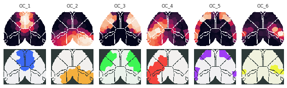
import ants
from register.register import organize_func_data, register_anat_data, reorient_arr, reset_ants_img, _load_prepare_ants
masks = np.load(pjoin(mice.cfg.masks_dir, 'sub-SLC07_ses-1_space-CCF_atlas3d-inv.npy'), allow_pickle=True)
masks = masks.item()
list(masks)
['roi', 'major', 'other']
list(masks['other'])
['root', 'CH', 'Isocortex', 'Isocortex_l', 'Isocortex_r']
arr = masks['other']['Isocortex'].copy()
iso_ants = ants.from_numpy(arr.astype('uint32'))
iso_ants = reset_ants_img(arr, spacing=0.2)
iso_ants
ANTsImage (RAI) Pixel Type : float (float32) Components : 1 Dimensions : (78, 64, 64) Spacing : (0.2, 0.2, 0.2) Origin : (0.0, 0.0, 0.0) Direction : [1. 0. 0. 0. 1. 0. 0. 0. 1.]
# ants.image_write(iso_ants, pjoin(mice.cfg.base_dir, 'iso.nii.gz'))
fig, ax = create_figure(1, 1, (4, 3))
ax.imshow(iso_ants.mean(1))
plt.show()
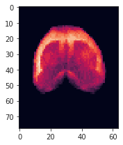
xxx = mice.T1w['sub-SLC07_ses-1'].get_data()
xxx = reorient_arr(xxx)
plt.imshow(xxx.mean(1))
plt.show()
xxx = ants.from_numpy(xxx)
xxx = reset_ants_img(xxx, spacing=0.2)
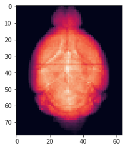
xxx.plot(
overlay=iso_ants,
cmap='Greys',
axis=0,
nslices=81,
figsize=5,
)
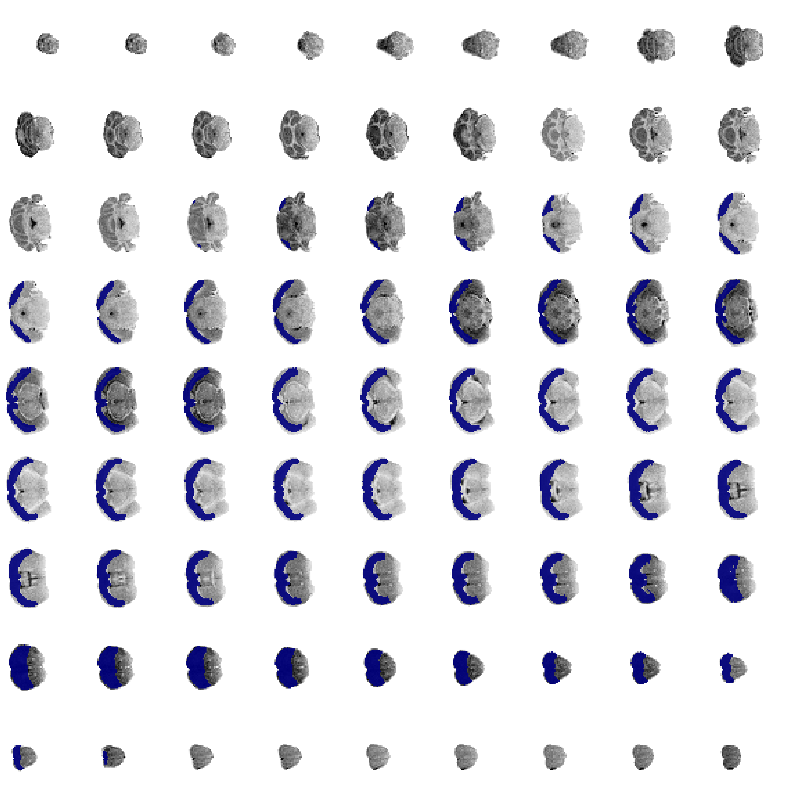
xxx.plot(
overlay=iso_ants,
cmap='Greys',
axis=1,
nslices=81,
figsize=5,
)
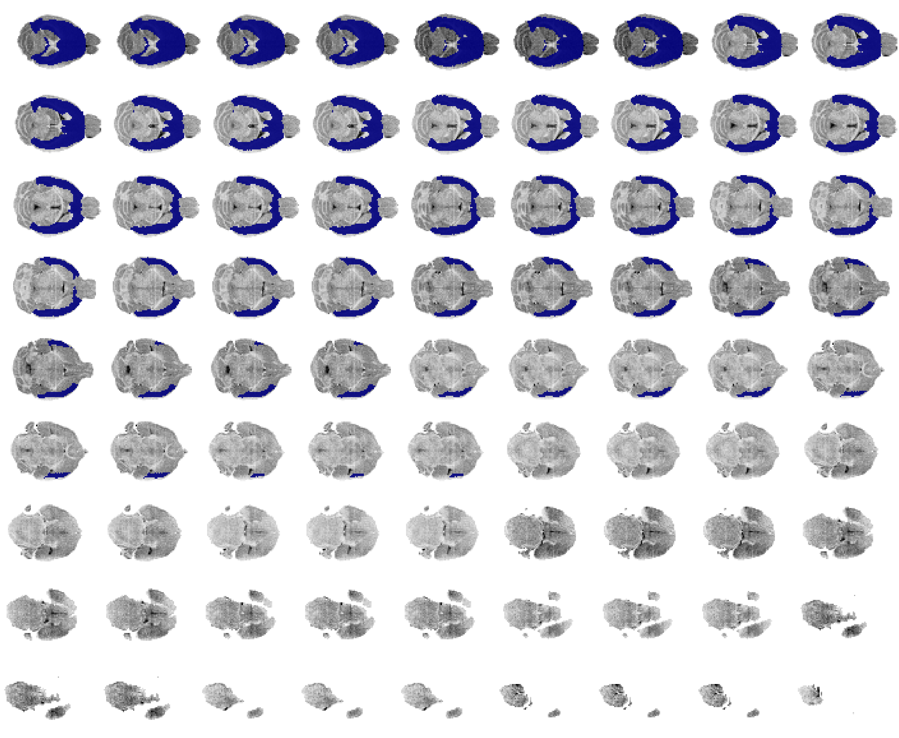
xxx.plot(
overlay=iso_ants,
cmap='Greys',
axis=2,
nslices=81,
figsize=5,
)
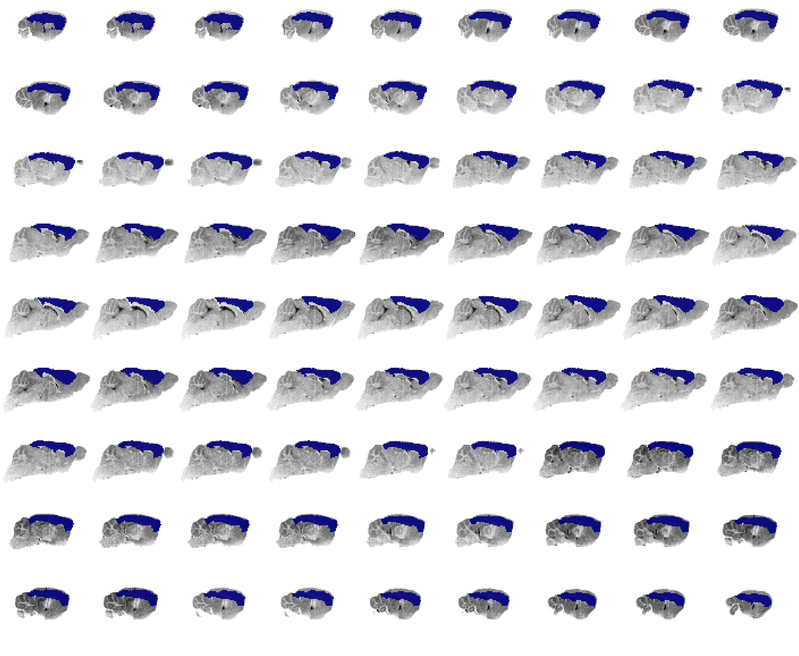
in_house_name = 'Symmetric_N162'
type_of_transform = 'SyN'
interpolator = 'genericLabel'
space = 'CCF'
resolution = 100
key_space = f"space-{space}"
mice = mice if mice else Mice(load_preproc=True, load_df=False)
spacing_mm = resolution / 1000
yale_file = f"{in_house_name}_{spacing_mm:.2f}.nii.gz"
yale_file = pjoin(mice.cfg.base_dir, yale_file)
yale = _load_prepare_ants(yale_file, spacing_mm)
template = reset_ants_img(mice.allen['template'], spacing=spacing_mm)
tx_ccf2yale = [
in_house_name, 'space-CCF',
f"ants-{type_of_transform}-inv",
]
tx_ccf2yale = '_'.join(tx_ccf2yale)
tx_ccf2yale = list(filter(
lambda f: tx_ccf2yale in f,
os.listdir(mice.cfg.tx_dir)
))
tx_ccf2yale = [
pjoin(mice.cfg.tx_dir, f)
for f in sorted(tx_ccf2yale, reverse=False)
]
def _apply(m, tx_yale2indiv):
warped_yale = ants.apply_transforms(
fixed=yale,
moving=reset_ants_img(m, spacing=spacing_mm),
transformlist=tx_ccf2yale,
interpolator=interpolator,
)
warped_indiv = ants.apply_transforms(
fixed=indiv,
moving=warped_yale,
transformlist=tx_yale2indiv,
interpolator=interpolator
)
return warped_indiv#.numpy().astype(bool)
for key, anat in mice.T1w.items():
if key != 'sub-SLC06_ses-1':
continue
indiv = anat.get_data()
if indiv is None:
continue
indiv = reorient_arr(indiv)
indiv = reset_ants_img(indiv, spacing=spacing_mm * 2)
tx_inv = '_'.join([key, key_space, 'ants-SyN-inv'])
tx_inv = list(filter(
lambda f: tx_inv in f,
os.listdir(mice.cfg.tx_dir)
))
tx_inv = [
pjoin(mice.cfg.tx_dir, f)
for f in sorted(tx_inv, reverse=False)
]
print(tx_inv)
[ '/home/hadi/Documents/Ca-fMRI/processed/transforms/sub-SLC06_ses-1_space-CCF_ants-SyN-inv .mat', '/home/hadi/Documents/Ca-fMRI/processed/transforms/sub-SLC06_ses-1_space-CCF_ants-SyN-inv .nii.gz' ]
warped_indiv = _apply(template, tx_inv)
warped_indiv
ANTsImage (RAI) Pixel Type : float (float32) Components : 1 Dimensions : (78, 64, 64) Spacing : (0.2, 0.2, 0.2) Origin : (0.0, 0.0, 0.0) Direction : [1. 0. 0. 0. 1. 0. 0. 0. 1.]
plt.imshow(warped_indiv.mean(1))
<matplotlib.image.AxesImage object at 0x7e481eacdb20>
xxx = mice.T1w['sub-SLC06_ses-1'].get_data()
xxx = reorient_arr(xxx)
plt.imshow(xxx.mean(1))
<matplotlib.image.AxesImage object at 0x7e481e921e50>
ants.image_read(pjoin(mice.cfg.warped_dir, 'sub-SLC06_ses-1_space-CCF_T1w.nii.gz'))
ANTsImage (RAI) Pixel Type : float (float32) Components : 1 Dimensions : (132, 80, 114) Spacing : (0.1, 0.1, 0.1) Origin : (0.0, 0.0, 0.0) Direction : [1. 0. 0. 0. 1. 0. 0. 0. 1.]
register_anat_data(mice=mice, n_seeds=3)
0%| | 0/30 [00:00<?, ?it/s]
sub-SLC01_ses-1, best rel mi: 0.458
3%|▎ | 1/30 [00:33<15:58, 33.04s/it]
sub-SLC01_ses-2, best rel mi: 0.453
7%|▋ | 2/30 [01:07<15:50, 33.95s/it]
sub-SLC01_ses-3, best rel mi: 0.454
10%|█ | 3/30 [01:41<15:18, 34.00s/it]
sub-SLC02_ses-1, best rel mi: 0.451
13%|█▎ | 4/30 [02:17<14:59, 34.61s/it]
sub-SLC02_ses-2, best rel mi: 0.44
17%|█▋ | 5/30 [02:51<14:24, 34.57s/it]
sub-SLC02_ses-3, best rel mi: 0.451
20%|██ | 6/30 [03:26<13:48, 34.53s/it]
sub-SLC03_ses-1, best rel mi: 0.462
23%|██▎ | 7/30 [04:01<13:17, 34.69s/it]
sub-SLC03_ses-2, best rel mi: 0.462
27%|██▋ | 8/30 [04:37<12:51, 35.05s/it]
sub-SLC03_ses-3, best rel mi: 0.457
30%|███ | 9/30 [05:11<12:09, 34.72s/it]
sub-SLC04_ses-1, best rel mi: 0.457
33%|███▎ | 10/30 [05:46<11:36, 34.84s/it]
sub-SLC04_ses-2, best rel mi: 0.468
37%|███▋ | 11/30 [06:22<11:09, 35.24s/it]
sub-SLC04_ses-3, best rel mi: 0.463
40%|████ | 12/30 [06:56<10:26, 34.78s/it]
sub-SLC05_ses-1, best rel mi: 0.454
43%|████▎ | 13/30 [07:33<10:02, 35.46s/it]
sub-SLC05_ses-2, best rel mi: 0.453
47%|████▋ | 14/30 [08:07<09:20, 35.04s/it]
sub-SLC05_ses-3, best rel mi: 0.463
50%|█████ | 15/30 [08:41<08:41, 34.76s/it]
sub-SLC06_ses-1, best rel mi: 0.462
53%|█████▎ | 16/30 [09:14<08:01, 34.39s/it]
sub-SLC06_ses-2, best rel mi: 0.448
57%|█████▋ | 17/30 [09:49<07:30, 34.64s/it]
sub-SLC06_ses-3, best rel mi: 0.448
60%|██████ | 18/30 [10:24<06:53, 34.49s/it]
sub-SLC07_ses-1, best rel mi: 0.445
63%|██████▎ | 19/30 [10:59<06:21, 34.64s/it]
sub-SLC07_ses-2, best rel mi: 0.458
67%|██████▋ | 20/30 [11:34<05:48, 34.81s/it]
sub-SLC07_ses-3, best rel mi: 0.448
70%|███████ | 21/30 [12:08<05:12, 34.75s/it]
sub-SLC08_ses-1, best rel mi: 0.457
73%|███████▎ | 22/30 [12:43<04:37, 34.69s/it]
sub-SLC08_ses-2, best rel mi: 0.461
77%|███████▋ | 23/30 [13:18<04:04, 34.91s/it]
sub-SLC08_ses-3, best rel mi: 0.445
80%|████████ | 24/30 [13:53<03:29, 34.90s/it]
sub-SLC09_ses-1, best rel mi: 0.451
83%|████████▎ | 25/30 [14:28<02:54, 34.89s/it]
sub-SLC09_ses-2, best rel mi: 0.453
87%|████████▋ | 26/30 [15:06<02:22, 35.72s/it]
sub-SLC09_ses-3, best rel mi: 0.467
90%|█████████ | 27/30 [15:41<01:47, 35.67s/it]
sub-SLC10_ses-1, best rel mi: 0.459
93%|█████████▎| 28/30 [16:17<01:11, 35.79s/it]
sub-SLC10_ses-2, best rel mi: 0.447
97%|█████████▋| 29/30 [16:54<00:35, 35.98s/it]
sub-SLC10_ses-3, best rel mi: 0.416
100%|██████████| 30/30 [17:31<00:00, 35.06s/it]
—#
import ants
from register.register import reorient_arr, reset_ants_img, register_in_house
df_tx, best_tx_yale2ccf = register_in_house('Symmetric_N162', mice=mice, n_seeds=3)
df_tx.iloc[[df_tx.perf.argmax()]]
| resolution | seed | grad | bins | type | perf | tx | |
|---|---|---|---|---|---|---|---|
| 12 | 100 | 2 | 1.3 | 32 | SyN | 0.492486 | {'warpedmovout': ANTsImage (RAI) Pixel Type ... |
sns.pointplot(data=df_tx, x='grad', y='perf')
<AxesSubplot:xlabel='grad', ylabel='perf'>
_df = df_tx.groupby(['grad', 'bins', 'type']).mean()
best_params = _df.iloc[[_df.perf.argmax()]]
best_params = dict(zip(
best_params.index.names,
best_params.index.values[0]
))
cond = [
np.array(df_tx[k] == v)
for k, v in best_params.items()
]
# noinspection PyTypeChecker
cond = functools.reduce(np.logical_and, cond)
_df = df_tx.loc[cond]
_df = _df.iloc[[_df.perf.argmax()]]
# best_tx_yale2ccf = _df.tx.values.item()
_df
| resolution | seed | grad | bins | type | perf | tx | |
|---|---|---|---|---|---|---|---|
| 12 | 100 | 2 | 1.3 | 32 | SyN | 0.492486 | {'warpedmovout': ANTsImage (RAI) Pixel Type ... |
"""best_hyperparams = dict(zip(
best_hyperparams.index.names,
best_hyperparams.index.values[0]
))
best_hyperparams"""
{'grad': 1.0, 'bins': 32, 'type': 'SyN'}
"""cond = [
np.array(df_tx[k] == v)
for k, v in best_hyperparams.items()
]
cond = functools.reduce(np.logical_and, cond)
_df = df_tx.loc[cond]
_df = _df.iloc[[_df.perf.argmax()]]
_df"""
| resolution | seed | grad | bins | type | perf | tx | |
|---|---|---|---|---|---|---|---|
| 48 | 100 | 32 | 1.0 | 32 | SyN | 0.492417 | {'warpedmovout': ANTsImage (RAI) Pixel Type ... |
tx_yale2ccf = [
'Symmetric_N162', 'space-CCF',
f"ants-SyN-fwd",
]
tx_yale2ccf = '_'.join(tx_yale2ccf)
tx_yale2ccf = list(filter(
lambda f: tx_yale2ccf in f,
os.listdir(mice.cfg.tx_dir)
))
tx_yale2ccf = [
pjoin(mice.cfg.tx_dir, f)
for f in sorted(tx_yale2ccf, reverse=True)
]
tx_yale2ccf
[ '/home/hadi/Documents/Ca-fMRI/processed/transforms/Symmetric_N162_space-CCF_ants-SyN-fwd.nii.gz', '/home/hadi/Documents/Ca-fMRI/processed/transforms/Symmetric_N162_space-CCF_ants-SyN-fwd.mat' ]
Now do moving#
resolution = 100
in_house_name = 'Symmetric_N162'
spacing_mm = resolution / 1000
yale_file = f"{in_house_name}_{spacing_mm:.2f}.nii.gz"
yale_file = pjoin(mice.cfg.base_dir, yale_file)
yale = _load_prepare_ants(yale_file, spacing_mm)
template = reset_ants_img(mice.allen['template'], spacing=spacing_mm)
yale, template
( ANTsImage (RAI) Pixel Type : float (float32) Components : 1 Dimensions : (160, 90, 118) Spacing : (0.1, 0.1, 0.1) Origin : (0.0, 0.0, 0.0) Direction : [1. 0. 0. 0. 1. 0. 0. 0. 1.] , ANTsImage (RAI) Pixel Type : float (float32) Components : 1 Dimensions : (132, 80, 114) Spacing : (0.1, 0.1, 0.1) Origin : (0.0, 0.0, 0.0) Direction : [1. 0. 0. 0. 1. 0. 0. 0. 1.] )
anat = mice.T1w['sub-SLC06_ses-1']
moving = anat.get_data()
moving = reorient_arr(moving)
moving = reset_ants_img(moving, spacing=0.2)
moving
ANTsImage (RAI) Pixel Type : float (float32) Components : 1 Dimensions : (78, 64, 64) Spacing : (0.2, 0.2, 0.2) Origin : (0.0, 0.0, 0.0) Direction : [1. 0. 0. 0. 1. 0. 0. 0. 1.]
seeds = [2**i for i in range(3)]
_txs = []
_perf = []
for seed in tqdm(seeds):
tx = ants.registration(
fixed=yale,
moving=moving,
mask=moving.get_mask(),
type_of_transform='SyN',
verbose=True,
grad_step=1.0,
random_seed=seed,
)
warped = ants.apply_transforms(
fixed=yale,
moving=moving,
transformlist=tx['fwdtransforms'],
interpolator='linear',
)
mi = ants.image_mutual_information(yale, warped)
mi_base = ants.image_mutual_information(yale, yale)
_perf.append(mi / mi_base)
_txs.append(tx)
print(np.argmax(_perf), _perf[np.argmax(_perf)])
2 0.7350436993801447
_perf
[0.7202207897560498, 0.7345631254825565, 0.7350436993801447]
best_tx = _txs[np.argmax(_perf)]
warped_yale = ants.apply_transforms(
fixed=yale,
moving=moving,
transformlist=best_tx['fwdtransforms'],
interpolator='linear',
)
mi = ants.image_mutual_information(yale, warped_yale)
mi_base = ants.image_mutual_information(yale, yale)
mi / mi_base
0.7350436993801447
warped_ccf = ants.apply_transforms(
fixed=template,
moving=warped_yale,
transformlist=tx_yale2ccf,
interpolator='linear',
)
mi = ants.image_mutual_information(template, warped_ccf)
mi_base = ants.image_mutual_information(template, template)
mi / mi_base
0.453232351189077
for src in best_tx_yale2ccf['fwdtransforms']:
ext = '.'.join(src.split('.')[1:])
shutil.copyfile(
src=src, dst=f"/home/hadi/Documents/test-fwd.{ext}")
best_tx_yale2ccf['fwdtransforms']
['/tmp/tmpe2yhmx2e1Warp.nii.gz', '/tmp/tmpe2yhmx2e0GenericAffine.mat']
tx_yale2ccf
[ '/home/hadi/Documents/Ca-fMRI/processed/transforms/Symmetric_N162_space-CCF_ants-SyN-fwd.mat', '/home/hadi/Documents/Ca-fMRI/processed/transforms/Symmetric_N162_space-CCF_ants-SyN-fwd.nii.gz' ]
testtest = [tx_yale2ccf[1], tx_yale2ccf[0]]
testtest
[ '/home/hadi/Documents/Ca-fMRI/processed/transforms/Symmetric_N162_space-CCF_ants-SyN-fwd.nii.gz', '/home/hadi/Documents/Ca-fMRI/processed/transforms/Symmetric_N162_space-CCF_ants-SyN-fwd.mat' ]
warped_ccf = ants.apply_transforms(
fixed=template,
moving=warped_yale,
transformlist=testtest,
interpolator='linear',
)
mi = ants.image_mutual_information(template, warped_ccf)
mi_base = ants.image_mutual_information(template, template)
mi / mi_base
0.4536662095006584
fig, axes = create_figure(3, 3, (8, 9))
for i in range(3):
axes[0, i].imshow(template.mean(i))
axes[1, i].imshow(warped_ccf.mean(i))
axes[2, i].imshow(yale.mean(i))
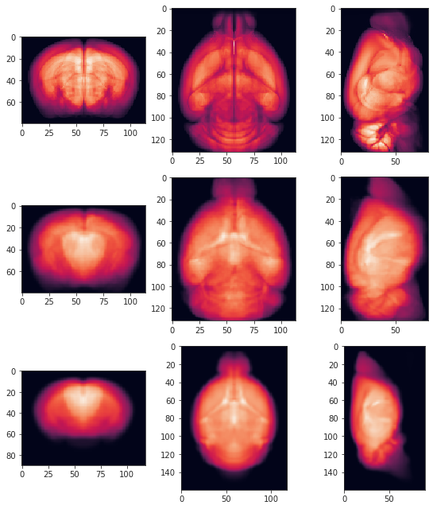
————————————#
os.listdir(mice.cfg.base_dir)
[ 'processed', '_label_names.rtf', 'Symmetric_N162_0.275.nii.gz', 'Symmetric_N162_0.10.nii.gz', 'Symmetric_N162_0.20.nii.gz', 'mouseatlas_2020.json', 'Symmetric_N162_0.05.nii.gz', 'atlases_templates' ]
file = pjoin(mice.cfg.base_dir, 'Symmetric_N162_0.10.nii.gz')
# file = pjoin(mice.cfg.base_dir, 'N162_medium_symm_0.2.nii.gz')
img = nib.load(file)
arr = img.get_fdata()
arr.shape
(118, 90, 160)
fig, axes = create_figure(1, 3, (12, 3))
for i, ax in enumerate(axes.ravel()):
ax.imshow(arr.mean(i))
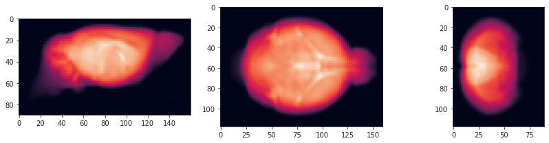
import ants
img_ants = ants.image_read(file)
img_ants
ANTsImage (RAI) Pixel Type : float (float32) Components : 1 Dimensions : (118, 90, 160) Spacing : (0.1, 0.1, 0.1) Origin : (6.4, -6.2, -7.8) Direction : [1. 0. 0. 0. 1. 0. 0. 0. 1.]
iso_ccf = mice.allen['isocortex_mask']
iso_ccf.shape
(132, 80, 114)
fig, axes = create_figure(1, 3, (12, 3))
for i, ax in enumerate(axes.ravel()):
ax.imshow(iso_ccf.mean(i))
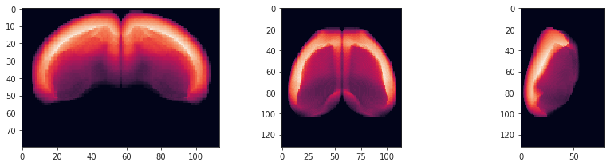
from register.register import reorient_arr, reset_ants_img
iso_ccf = reorient_arr(iso_ccf, (2, 1, 0))
iso_ccf = iso_ccf[..., ::-1]
fig, axes = create_figure(1, 3, (12, 3))
for i, ax in enumerate(axes.ravel()):
ax.imshow(iso_ccf.mean(i))
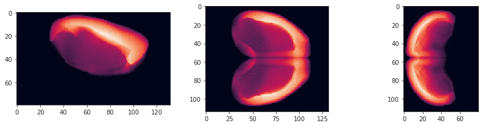
fig, axes = create_figure(1, 3, (12, 3))
for i, ax in enumerate(axes.ravel()):
ax.imshow(arr.mean(i))
img_ants
ANTsImage (RAI) Pixel Type : float (float32) Components : 1 Dimensions : (118, 90, 160) Spacing : (0.1, 0.1, 0.1) Origin : (6.4, -6.2, -7.8) Direction : [1. 0. 0. 0. 1. 0. 0. 0. 1.]
iso_ccf_ants = ants.from_numpy(
data=iso_ccf.astype('uint32'),
origin=img_ants.origin,
spacing=img_ants.spacing,
direction=img_ants.direction,
)
iso_ccf_ants
ANTsImage (RAI) Pixel Type : unsigned int (uint32) Components : 1 Dimensions : (114, 80, 132) Spacing : (0.1, 0.1, 0.1) Origin : (6.4, -6.2, -7.8) Direction : [1. 0. 0. 0. 1. 0. 0. 0. 1.]
ants.image_write(iso_ccf_ants, pjoin(mice.cfg.base_dir, 'iso_ccf_ants.nii.gz'))
iso_ccf_nib = ants.to_nibabel(iso_ccf_ants)
iso_ccf_nib.set_data_dtype(img.get_data_dtype())
iso_ccf_nib.set_qform(img.get_qform())
iso_ccf_nib.set_sform(img.get_sform())
nib.save(iso_ccf_nib, pjoin(mice.cfg.base_dir, 'iso_ccf_nib.nii.gz'))
medium = nib.load(pjoin(mice.cfg.base_dir, 'N162_medium_symm_0.1.nii.gz'))
medium.get_data_dtype()
dtype('<i2')
medium.get_sform()
array([[-0.1, 0. , 0. , 0. ], [ 0. , -0.1, 0. , 0. ], [ 0. , 0. , 0.1, 0. ], [ 0. , 0. , 0. , 1. ]])
medium.get_qform()
array([[-0.1 , 0. , 0. , -6.4000001 ], [ 0. , -0.1 , 0. , 6.20000029], [ 0. , 0. , 0.1 , -7.80000019], [ 0. , 0. , 0. , 1. ]])
hdr = medium.get_header()
hdr.get_qform()
array([[-0.1 , 0. , 0. , -6.4000001 ], [ 0. , -0.1 , 0. , 6.20000029], [ 0. , 0. , 0.1 , -7.80000019], [ 0. , 0. , 0. , 1. ]])
iso_ccf_nib_2 = nib.Nifti1Image(
mice.allen['template'].astype(medium.get_data_dtype()),
affine=medium.get_affine(),
header=medium.get_header(),
)
nib.save(iso_ccf_nib_2, pjoin(mice.cfg.base_dir, 'temp_ccf_nib_2.nii.gz'))
in_house_name = 'Symmetric_N162'
type_of_transform = 'SyN'
tx_ccf2yale = [
in_house_name, 'space-CCF',
f"ants-{type_of_transform}-inv",
]
tx_ccf2yale = '_'.join(tx_ccf2yale)
tx_ccf2yale = list(filter(
lambda f: tx_ccf2yale in f,
os.listdir(mice.cfg.tx_dir)
))
tx_ccf2yale = [
pjoin(mice.cfg.tx_dir, f)
for f in sorted(tx_ccf2yale, reverse=False)
]
tx_ccf2yale
[ '/home/hadi/Documents/Ca-fMRI/processed/transforms/Symmetric_N162_space-CCF_ants-SyN-inv.mat', '/home/hadi/Documents/Ca-fMRI/processed/transforms/Symmetric_N162_space-CCF_ants-SyN-inv.nii.gz' ]
spacing_mm = resolution / 1000
yale_file = f"{in_house_name}_{spacing_mm:.2f}.nii.gz"
yale_file = pjoin(mice.cfg.base_dir, yale_file)
yale = _load_prepare_ants(yale_file, spacing_mm)
template = reset_ants_img(mice.allen['template'], spacing=0.1)
ccf_hadi = ants.apply_transforms(
fixed=yale,
moving=template,
transformlist=tx_ccf2yale,
interpolator='linear',
)
ccf_hadi
ANTsImage (RAI) Pixel Type : float (float32) Components : 1 Dimensions : (160, 90, 118) Spacing : (0.1, 0.1, 0.1) Origin : (0.0, 0.0, 0.0) Direction : [1. 0. 0. 0. 1. 0. 0. 0. 1.]
ants.image_write(ccf_hadi, pjoin(mice.cfg.base_dir, 'temp_ccf_hadi.nii.gz'))
over = ants.image_read(pjoin(mice.cfg.base_dir, 'overlay0.nii.gz'))
fig, axes = create_figure(3, 3, (8, 9))
for i in range(3):
axes[0, i].imshow(yale.mean(i))
axes[1, i].imshow(ccf_hadi.mean(i))
# axes[2, i].imshow(over.mean(i))
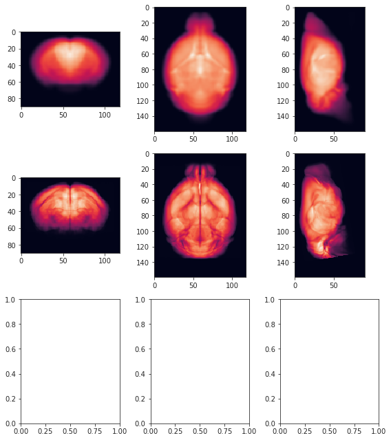
yale.plot(
overlay=ccf_hadi,
overlay_cmap='nipy_spectral',
overlay_alpha=0.5,
axis=1,
nslices=81,
figsize=3,
)
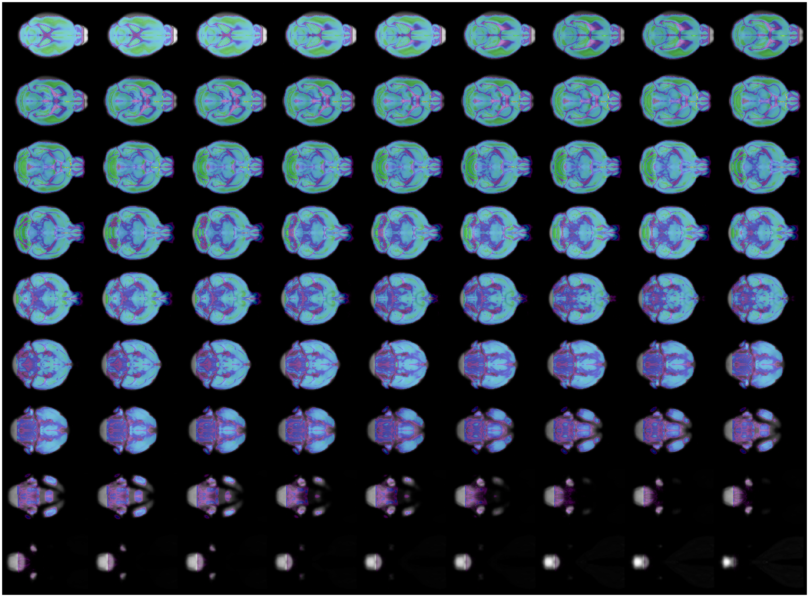
"""yale_mask = yale.get_mask()
custom_mask = np.ones_like(yale_mask.numpy())
custom_mask[:12] = 0
custom_mask[-20:] = 0
yale_mask *= custom_mask
yale_mask"""
ANTsImage (RAI) Pixel Type : float (float32) Components : 1 Dimensions : (160, 90, 118) Spacing : (0.1, 0.1, 0.1) Origin : (0.0, 0.0, 0.0) Direction : [1. 0. 0. 0. 1. 0. 0. 0. 1.]
seeds = [2**i for i in range(3)]
_txs = []
_perf = []
for seed in tqdm(seeds):
tx = ants.registration(
fixed=template,
moving=yale,
mask=yale.get_mask(),
type_of_transform='ElasticSyN',
grad_step=1.0,
random_seed=seed,
verbose=True,
)
warped = ants.apply_transforms(
fixed=yale,
moving=template,
transformlist=tx['invtransforms'],
interpolator='linear',
)
mi = ants.image_mutual_information(yale, warped)
mi_base = ants.image_mutual_information(yale, yale)
score = mi / mi_base
print(seed, score)
_perf.append(score)
_txs.append(tx)
1 0.4917995963759468
2 0.49129915625182813
4 0.4909007170763232
_perf
[0.4917995963759468, 0.49129915625182813, 0.4909007170763232]
_perf[np.argmax(_perf)]
0.4917995963759468
best_tx = _txs[np.argmax(_perf)]
ccf_hadi = ants.apply_transforms(
fixed=yale,
moving=template,
transformlist=best_tx['invtransforms'],
interpolator='linear',
)
ccf_hadi
ANTsImage (RAI) Pixel Type : float (float32) Components : 1 Dimensions : (160, 90, 118) Spacing : (0.1, 0.1, 0.1) Origin : (0.0, 0.0, 0.0) Direction : [1. 0. 0. 0. 1. 0. 0. 0. 1.]
yale.plot(
overlay=ccf_hadi,
overlay_cmap='nipy_spectral',
overlay_alpha=0.4,
axis=1,
slices=[10, 15, 20, 25, 30],
figsize=3,
)
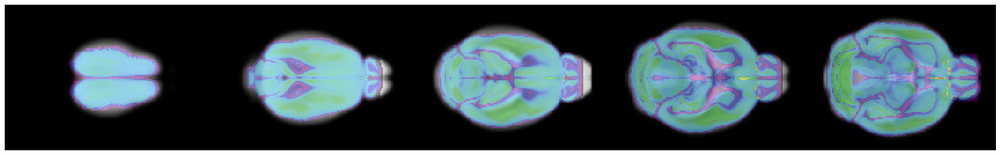
yale.plot(
overlay=ccf_hadi,
overlay_cmap='nipy_spectral',
overlay_alpha=0.4,
axis=0,
nslices=81,
# slices=[10, 15, 20, 25, 30],
figsize=3,
)
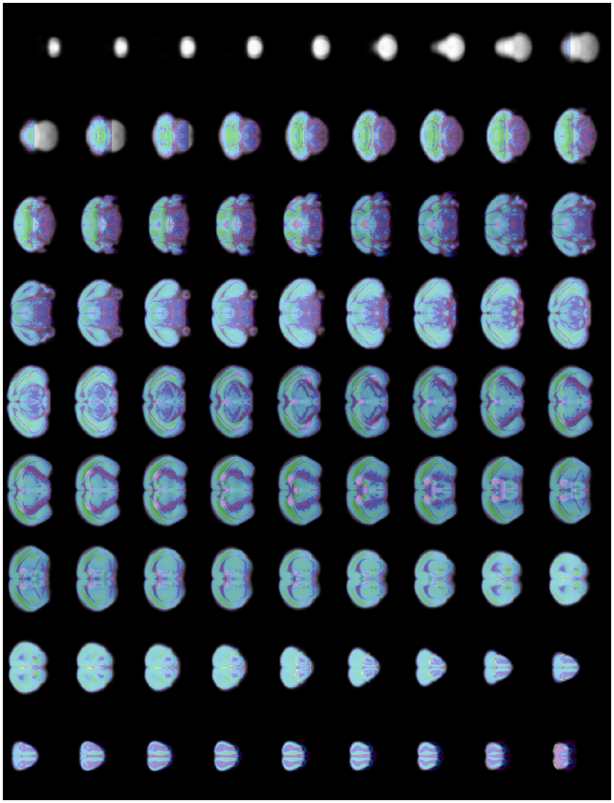
fig, axes = create_figure(3, 3, (8, 8))
for i in range(3):
axes[0, i].imshow(yale.mean(i))
axes[1, i].imshow(ccf_hadi.mean(i))
axes[2, i].imshow(template.mean(i))
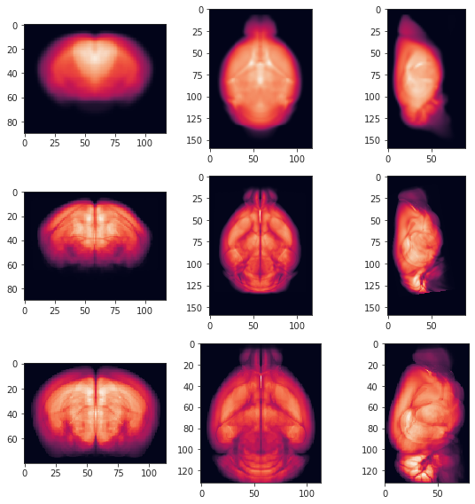
load = pjoin(mice.cfg.base_dir, 'overlay0.nii.gz')
# load = pjoin(mice.cfg.base_dir, 'N162_medium_symm_0.2.nii.gz')
over = nib.load(load)
over_arr = over.get_fdata()
over.shape
(118, 90, 160)
fig, axes = create_figure(1, 3, (12, 3))
for i, ax in enumerate(axes.ravel()):
ax.imshow(over_arr.mean(i))
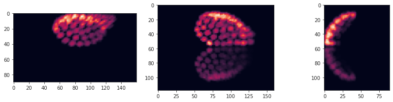
fig, axes = create_figure(1, 3, (12, 3))
for i, ax in enumerate(axes.ravel()):
ax.imshow(arr.mean(i))
temp = mice.allen['template'].copy()
temp.shape
(132, 80, 114)
fig, axes = create_figure(1, 3, (12, 3))
for i, ax in enumerate(axes.ravel()):
ax.imshow(temp.mean(i))
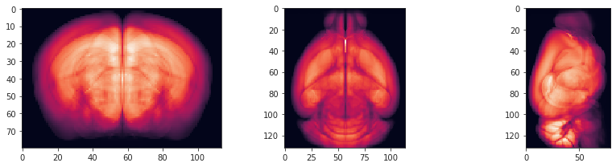
yale_n162 = reorient_arr(arr)
fig, axes = create_figure(1, 3, (12, 3))
for i, ax in enumerate(axes.ravel()):
ax.imshow(yale_n162.mean(i))
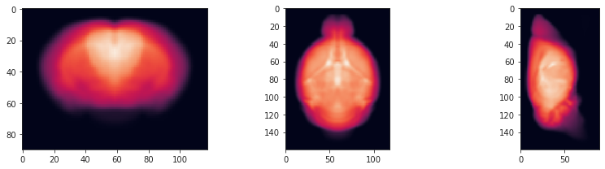
anat = mice.T1w['sub-SLC07_ses-1']
moving = anat.get_data()
moving = reorient_arr(moving)
moving = reset_ants_img(moving, spacing=0.2)
moving.shape
(78, 64, 64)
moving
ANTsImage (RAI) Pixel Type : float (float32) Components : 1 Dimensions : (78, 64, 64) Spacing : (0.2, 0.2, 0.2) Origin : (0.0, 0.0, 0.0) Direction : [1. 0. 0. 0. 1. 0. 0. 0. 1.]
yale_n162_ants = reset_ants_img(yale_n162, spacing=0.1)
yale_n162_ants
ANTsImage (RAI) Pixel Type : float (float32) Components : 1 Dimensions : (160, 90, 118) Spacing : (0.1, 0.1, 0.1) Origin : (0.0, 0.0, 0.0) Direction : [1. 0. 0. 0. 1. 0. 0. 0. 1.]
temp = mice.allen['template'].copy()
temp = reset_ants_img(temp, spacing=0.1)
temp
ANTsImage (RAI) Pixel Type : float (float32) Components : 1 Dimensions : (132, 80, 114) Spacing : (0.1, 0.1, 0.1) Origin : (0.0, 0.0, 0.0) Direction : [1. 0. 0. 0. 1. 0. 0. 0. 1.]
fig, axes = create_figure(3, 3, (8, 9))
for i in range(3):
axes[0, i].imshow(temp.mean(i))
axes[1, i].imshow(yale_n162_ants.mean(i))
axes[2, i].imshow(moving.mean(i))
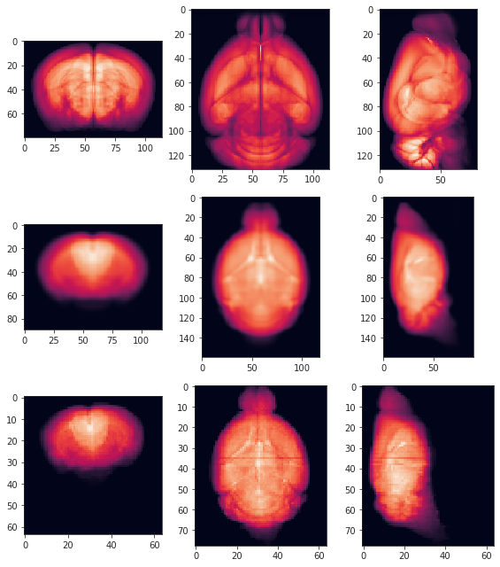
x = mice.bold_preproc['sub-SLC07_ses-1_run-1'].get_data()
x.shape
(64, 64, 78, 600)
x = reorient_arr(x)
x.shape
(78, 64, 64, 600)
plt.imshow(x[60, ..., 120])
<matplotlib.image.AxesImage object at 0x7f5eb1b045b0>
mask = mice.mask3d['sub-SLC07_ses-1'].get_data()
mask.shape
(64, 64, 78)
mask = reorient_arr(mask)
mask.shape
(78, 64, 64)
plt.imshow(mask.mean(0))
<matplotlib.image.AxesImage object at 0x7e80ccea6a30>
plt.imshow((x[..., 14] * mask)[40])
<matplotlib.image.AxesImage object at 0x7da276b69f10>
fixed.shape, moving.shape
((81, 46, 60), (78, 64, 64))
seeds = [2**i for i in range(20)]
_txs = []
_perf = []
for seed in tqdm(seeds):
tx = ants.registration(
fixed=yale_n162_ants,
moving=moving,
mask=moving.get_mask(),
type_of_transform='SyN',
verbose=True,
random_seed=seed,
)
warped = ants.apply_transforms(
fixed=yale_n162_ants,
moving=moving,
transformlist=tx['fwdtransforms'],
interpolator='linear',
)
mi = ants.image_mutual_information(yale_n162_ants, warped)
mi_base = ants.image_mutual_information(yale_n162_ants, yale_n162_ants)
_perf.append(mi / mi_base)
_txs.append(tx)
_perf
[ 0.7163733319692978, 0.7167061975866595, 0.717016214337218, 0.7162014296377772, 0.7159602693167388, 0.7160859480403823, 0.7174400770814668, 0.7167484711280843, 0.7170112413662827, 0.7166470110005212, 0.7181721565929463, 0.7170446120730681, 0.7160673921289735, 0.7177702264696979, 0.717317202515127, 0.7164773619580291, 0.7173873309239708, 0.7179310538307847, 0.7182154903300543, 0.717182669627533 ]
np.argmax(_perf)
18
_perf[np.argmax(_perf)], best_tx_1 = _txs[np.argmax(_perf)]
0.7182154903300543
best_tx_1 = _txs[np.argmax(_perf)]
seeds = [2**i for i in range(20)]
_txs = []
_perf = []
for seed in tqdm(seeds):
tx = ants.registration(
fixed=temp,
moving=yale_n162_ants,
mask=moving.get_mask(),
type_of_transform='SyN',
verbose=True,
random_seed=seed,
)
warped = ants.apply_transforms(
fixed=temp,
moving=yale_n162_ants,
transformlist=tx['fwdtransforms'],
interpolator='linear',
)
mi = ants.image_mutual_information(temp, warped)
mi_base = ants.image_mutual_information(temp, temp)
_perf.append(mi / mi_base)
_txs.append(tx)
_perf
[ 0.47670811792068324, 0.47652051106655446, 0.47663778806251605, 0.4770546808676121, 0.4765179187349432, 0.4763265584516872, 0.47551910061757935, 0.4763012911738477, 0.4760357960077301, 0.4760664084615421, 0.4763531092327108, 0.4767537316373203, 0.4771935814988283, 0.47684116704065505, 0.47692725010154746, 0.4768071508445787, 0.4762965707548136, 0.4765440199612596, 0.4771363870754192, 0.4762074572284065 ]
np.argmax(_perf)
12
_perf[np.argmax(_perf)]
0.4771935814988283
best_tx_2 = _txs[np.argmax(_perf)]
best_tx_1['fwdtransforms'], best_tx_2['fwdtransforms']
( ['/tmp/tmpmlwbajir1Warp.nii.gz', '/tmp/tmpmlwbajir0GenericAffine.mat'], ['/tmp/tmpr_b25qbb1Warp.nii.gz', '/tmp/tmpr_b25qbb0GenericAffine.mat'] )
warped1 = ants.apply_transforms(
fixed=yale_n162_ants,
moving=moving,
transformlist=best_tx_1['fwdtransforms'],
interpolator='linear',
)
mi = ants.image_mutual_information(yale_n162_ants, warped1)
mi_base = ants.image_mutual_information(yale_n162_ants, yale_n162_ants)
mi / mi_base
0.7182154903300543
warped2 = ants.apply_transforms(
fixed=temp,
moving=warped1,
transformlist=best_tx_2['fwdtransforms'],
interpolator='linear',
)
mi = ants.image_mutual_information(temp, warped2)
mi_base = ants.image_mutual_information(temp, temp)
mi / mi_base
0.4547654197625613
fig, axes = create_figure(4, 3, (8, 12))
for i in range(3):
axes[0, i].imshow(temp.mean(i))
axes[1, i].imshow(yale_n162_ants.mean(i))
axes[2, i].imshow(moving.mean(i))
axes[3, i].imshow(warped2.mean(i))
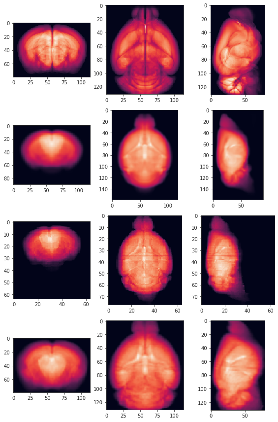
temp = mice.allen['template'].copy()
temp = reset_ants_img(temp, spacing=0.1)
temp.shape
(132, 80, 114)
temp
ANTsImage (RAI) Pixel Type : float (float32) Components : 1 Dimensions : (132, 80, 114) Spacing : (0.1, 0.1, 0.1) Origin : (0.0, 0.0, 0.0) Direction : [1. 0. 0. 0. 1. 0. 0. 0. 1.]
yale_n162_ants
ANTsImage (RAI) Pixel Type : float (float32) Components : 1 Dimensions : (160, 90, 118) Spacing : (0.1, 0.1, 0.1) Origin : (0.0, 0.0, 0.0) Direction : [1. 0. 0. 0. 1. 0. 0. 0. 1.]
fig, axes = create_figure(2, 3, (8, 6))
for i in range(3):
axes[0, i].imshow(temp.mean(i))
axes[1, i].imshow(yale_n162_ants.mean(i))
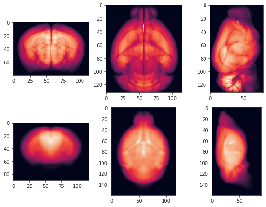
_txs = []
_perf = []
for seed in tqdm(seeds):
tx = ants.registration(
fixed=temp,
moving=fixed,
mask=fixed.get_mask(),
type_of_transform='SyN',
verbose=True,
random_seed=seed,
)
warped = ants.apply_transforms(
fixed=temp,
moving=fixed,
transformlist=tx['fwdtransforms'],
interpolator='linear',
)
mi = ants.image_mutual_information(temp, warped)
mi_base = ants.image_mutual_information(temp, temp)
_perf.append(mi / mi_base)
_txs.append(tx)
_perf
[ 0.07849137478717025, 0.08474589653543613, 0.4279977087687116, 0.07870640206489452, 0.428952599308624, 0.07524416125094234, 0.07760234045982159, 0.42850732529454777, 0.0069501886391655845, 0.07687764942384909, 0.07916476010907937, 0.08043469947969412, 0.08333666652569041, 0.08737387679574354, 0.0908598502420529, 0.050674646777813574, 0.08231525319203073, 0.08032300093087444, 0.42886511850341325, 0.4286692814753021 ]
_perf[np.argmax(_perf)]
0.428952599308624
ants.image_read(file)
ANTsImage (RAI) Pixel Type : float (float32) Components : 1 Dimensions : (60, 46, 81) Spacing : (0.2, 0.2, 0.2) Origin : (6.4, -6.2, -7.8) Direction : [1. 0. 0. 0. 1. 0. 0. 0. 1.]
ants.image_read(load)
ANTsImage (RAI) Pixel Type : float (float32) Components : 1 Dimensions : (60, 46, 81) Spacing : (0.2, 0.2, 0.2) Origin : (0.0, 0.0, 0.0) Direction : [1. 0. 0. 0. 1. 0. 0. 0. 1.]
ants.image_read(pjoin(mice.cfg.base_dir, 'test.nii.gz'))
ANTsImage (RAI) Pixel Type : float (float32) Components : 1 Dimensions : (66, 40, 57) Spacing : (0.2, 0.2, 0.2) Origin : (6.4, -6.2, -7.8) Direction : [1. 0. 0. 0. 1. 0. 0. 0. 1.]
ants.image_read(pjoin(mice.cfg.base_dir, 'overlay0.nii.gz'))
ANTsImage (RAI) Pixel Type : float (float32) Components : 1 Dimensions : (60, 46, 81) Spacing : (0.2, 0.2, 0.2) Origin : (6.4, -6.2, -7.8) Direction : [1. 0. 0. 0. 1. 0. 0. 0. 1.]
from register.atlas import get_subtree, included_intersect_tables
tree = load_bg_atlas().hierarchy
allen mouse atlas (res. 100um)
From: http://www.brain-map.org (Wang et al 2020, https://doi.org/10.1016/j.cell.2020.04.007 )
_ = get_subtree(
tree,
base_id=8,
n_levels=3,
show=True,
)
grey (8)
├── BS (343)
│ ├── HB (1065)
│ ├── IB (1129)
│ └── MB (313)
├── CB (512)
│ ├── CBN (519)
│ └── CBX (528)
└── CH (567)
├── CNU (623)
└── CTX (688)
_ = get_subtree(
tree,
base_id=567,
n_levels=4,
show=True,
)
CH (567)
├── CNU (623)
│ ├── PAL (803)
│ │ ├── PALc (809)
│ │ ├── PALd (818)
│ │ ├── PALm (826)
│ │ └── PALv (835)
│ └── STR (477)
│ ├── LSX (275)
│ ├── STRd (485)
│ ├── STRv (493)
│ └── sAMY (278)
└── CTX (688)
├── CTXpl (695)
│ ├── HPF (1089)
│ ├── Isocortex (315)
│ └── OLF (698)
└── CTXsp (703)
├── BLA (295)
├── BMA (319)
├── CLA (583)
├── EP (942)
├── LA (131)
└── PA (780)
cortex_subtree, base_lvl = get_subtree(
tree,
base_id=315,
n_levels=2,
show=True,
)
Isocortex (315)
├── ACA (31)
├── AI (95)
├── AUD (247)
├── ECT (895)
├── FRP (184)
├── GU (1057)
├── ILA (44)
├── MO (500)
├── ORB (714)
├── PERI (922)
├── PL (972)
├── PTLp (22)
├── RSP (254)
├── SS (453)
├── TEa (541)
├── VIS (669)
└── VISC (677)
_dir = '/home/hadi/Downloads/xilin'
os.listdir(_dir)
[ 'allcell_xilin_grand28_flip_symm.nii.gz', 'mouseatlas_2020.json', 'N162_medium_symm_0.2.nii.gz', 'N162_finesc_symm_0.2.nii.gz', 'N162_coarse_symm_0.2.nii.gz' ]
import json
with open(pjoin(_dir, 'mouseatlas_2020.json'), 'r') as f:
atlas = json.load(f)
atlas['labels']['data'][1]['name']
'Mid-60'
mid_labels = atlas['labels']['data'][1]['labels']
mid_labels
{ '1': 'R-Frontal pole, cerebral cortex (FRP,184)', '2': 'R-Somatomotor areas (MO,500)', '3': 'R-Somatosensory areas (SS,453)', '4': 'R-Gustatory areas (GU,1057)', '5': 'R-Visceral area (VISC,677)', '6': 'R-Auditory areas (AUD,247)', '7': 'R-Visual areas (VIS,669)', '8': 'R-Anterior cingulate area (ACA,31)', '9': 'R-Prelimbic area (PL,972)', '10': 'R-Infralimbic area (ILA,44)', '11': 'R-Orbital area (ORB,714)', '12': 'R-Agranular insular area (AI,95)', '13': 'R-Retrosplenial area (RSP,254)', '14': 'R-Posterior parietal association areas (PTLp,22)', '15': 'R-Temporal association areas (TEa,541)', '16': 'R-Perirhinal area (PERI,922)', '17': 'R-Ectorhinal area (ECT,895)', '18': 'R-Main olfactory bulb (MOB,507)', '19': 'R-Accessory olfactory bulb (AOB,151)', '20': 'R-Anterior olfactory nucleus (AON,159)', '21': 'R-Taenia tecta (TT,589)', '22': 'R-Dorsal peduncular area (DP,814)', '23': 'R-Piriform area (PIR,961)', '24': 'R-Nucleus of the lateral olfactory tract (NLOT,619)', '25': 'R-Cortical amygdalar area (COA,631)', '26': 'R-Piriform-amygdalar area (PAA,788)', '27': 'R-Postpiriform transition area (TR,566)', '28': 'R-Hippocampal region (HIP,1080)', '29': 'R-Retrohippocampal region (RHP,822)', '30': 'R-Claustrum (CLA,583)', '31': 'R-Endopiriform nucleus (EP,942)', '32': 'R-Lateral amygdalar nucleus (LA,131)', '33': 'R-Basolateral amygdalar nucleus (BLA,295)', '34': 'R-Basomedial amygdalar nucleus (BMA,319)', '35': 'R-Posterior amygdalar nucleus (PA,780)', '36': 'R-Striatum dorsal region (STRd,485)', '37': 'R-Striatum ventral region (STRv,493)', '38': 'R-Lateral septal complex (LSX,275)', '39': 'R-Striatum-like amygdalar nuclei (sAMY,278)', '40': 'R-Pallidum, dorsal region (PALd,818)', '41': 'R-Pallidum, ventral region (PALv,835)', '42': 'R-Pallidum, medial region (PALm,826)', '43': 'R-Pallidum, caudal region (PALc,809)', '44': 'R-Thalamus, sensory-motor cortex related (DORsm,864)', '45': 'R-Thalamus, polymodal association cortex related (DORpm,856)', '46': 'R-Periventricular zone (PVZ,157)', '47': 'R-Periventricular region (PVR,141)', '48': 'R-Hypothalamic medial zone (MEZ,467)', '49': 'R-Hypothalamic lateral zone (LZ,290)', '50': 'R-Midbrain, sensory related (MBsen,339)', '51': 'R-Midbrain, motor related (MBmot,323)', '52': 'R-Midbrain, behavioral state related (MBsta,348)', '53': 'R-Pons, sensory related (P-sen,1132)', '54': 'R-Pons, motor related (P-mot,987)', '55': 'R-Pons, behavioral state related (P-sat,1117)', '56': 'R-Medulla, sensory related (MY-sen,386)', '57': 'R-Medulla, motor related (MY-mot,370)', '58': 'R-Medulla, behavioral state related (MY-sat,379)', '59': 'R-Cerebellar cortex (CBX,528)', '60': 'R-Cerebellar nuclei (CBN,519)', '101': 'L-Frontal pole, cerebral cortex (FRP,184)', '102': 'L-Somatomotor areas (MO,500)', '103': 'L-Somatosensory areas (SS,453)', '104': 'L-Gustatory areas (GU,1057)', '105': 'L-Visceral area (VISC,677)', '106': 'L-Auditory areas (AUD,247)', '107': 'L-Visual areas (VIS,669)', '108': 'L-Anterior cingulate area (ACA,31)', '109': 'L-Prelimbic area (PL,972)', '110': 'L-Infralimbic area (ILA,44)', '111': 'L-Orbital area (ORB,714)', '112': 'L-Agranular insular area (AI,95)', '113': 'L-Retrosplenial area (RSP,254)', '114': 'L-Posterior parietal association areas (PTLp,22)', '115': 'L-Temporal association areas (TEa,541)', '116': 'L-Perirhinal area (PERI,922)', '117': 'L-Ectorhinal area (ECT,895)', '118': 'L-Main olfactory bulb (MOB,507)', '119': 'L-Accessory olfactory bulb (AOB,151)', '120': 'L-Anterior olfactory nucleus (AON,159)', '121': 'L-Taenia tecta (TT,589)', '122': 'L-Dorsal peduncular area (DP,814)', '123': 'L-Piriform area (PIR,961)', '124': 'L-Nucleus of the lateral olfactory tract (NLOT,619)', '125': 'L-Cortical amygdalar area (COA,631)', '126': 'L-Piriform-amygdalar area (PAA,788)', '127': 'L-Postpiriform transition area (TR,566)', '128': 'L-Hippocampal region (HIP,1080)', '129': 'L-Retrohippocampal region (RHP,822)', '130': 'L-Claustrum (CLA,583)', '131': 'L-Endopiriform nucleus (EP,942)', '132': 'L-Lateral amygdalar nucleus (LA,131)', '133': 'L-Basolateral amygdalar nucleus (BLA,295)', '134': 'L-Basomedial amygdalar nucleus (BMA,319)', '135': 'L-Posterior amygdalar nucleus (PA,780)', '136': 'L-Striatum dorsal region (STRd,485)', '137': 'L-Striatum ventral region (STRv,493)', '138': 'L-Lateral septal complex (LSX,275)', '139': 'L-Striatum-like amygdalar nuclei (sAMY,278)', '140': 'L-Pallidum, dorsal region (PALd,818)', '141': 'L-Pallidum, ventral region (PALv,835)', '142': 'L-Pallidum, medial region (PALm,826)', '143': 'L-Pallidum, caudal region (PALc,809)', '144': 'L-Thalamus, sensory-motor cortex related (DORsm,864)', '145': 'L-Thalamus, polymodal association cortex related (DORpm,856)', '146': 'L-Periventricular zone (PVZ,157)', '147': 'L-Periventricular region (PVR,141)', '148': 'L-Hypothalamic medial zone (MEZ,467)', '149': 'L-Hypothalamic lateral zone (LZ,290)', '150': 'L-Midbrain, sensory related (MBsen,339)', '151': 'L-Midbrain, motor related (MBmot,323)', '152': 'L-Midbrain, behavioral state related (MBsta,348)', '153': 'L-Pons, sensory related (P-sen,1132)', '154': 'L-Pons, motor related (P-mot,987)', '155': 'L-Pons, behavioral state related (P-sat,1117)', '156': 'L-Medulla, sensory related (MY-sen,386)', '157': 'L-Medulla, motor related (MY-mot,370)', '158': 'L-Medulla, behavioral state related (MY-sat,379)', '159': 'L-Cerebellar cortex (CBX,528)', '160': 'L-Cerebellar nuclei (CBN,519)' }
mid_acros = [s.split('(')[-1].split(',')[0] for s in mid_labels.values()]
mid_acros = list(set(mid_acros))
mid_structs = mice.allen['structure_tree'].get_structures_by_acronym(mid_acros)
mid_subcortical = [
s['acronym'] for s in mid_structs
if s['id'] not in cortex_subtree
]
len(mid_subcortical)
43
43, 173
tables = included_intersect_tables(
s_included=mid_subcortical,
s_main=['BS', 'CB', 'CNU', 'HPF', 'OLF', 'CTXsp'],
export_path=pjoin(tmp_dir, 'xilin_mid'),
allen=mice.allen,
tree=tree,
)
[PROGRESS] 'hierarchy_root-BS.html' saved at /home/hadi/Dropbox/git/jb-Ca-fMRI/tmp/xilin_mid
[PROGRESS] 'hierarchy_root-CB.html' saved at /home/hadi/Dropbox/git/jb-Ca-fMRI/tmp/xilin_mid
[PROGRESS] 'hierarchy_root-CNU.html' saved at /home/hadi/Dropbox/git/jb-Ca-fMRI/tmp/xilin_mid
[PROGRESS] 'hierarchy_root-HPF.html' saved at /home/hadi/Dropbox/git/jb-Ca-fMRI/tmp/xilin_mid
[PROGRESS] 'hierarchy_root-OLF.html' saved at /home/hadi/Dropbox/git/jb-Ca-fMRI/tmp/xilin_mid
[PROGRESS] 'hierarchy_root-CTXsp.html' saved at /home/hadi/Dropbox/git/jb-Ca-fMRI/tmp/xilin_mid
from bg_atlasapi import show_atlases
show_atlases()
Brainglobe Atlases ╭──────────────────────────────────┬────────────┬───────────────┬────────────────╮ │ Name │ Downloaded │ Local version │ Latest version │ ├──────────────────────────────────┼────────────┼───────────────┼────────────────┤ │ allen_cord_20um │ ✔ │ 1.0 │ 1.0 │ │ mpin_zfish_1um │ ✔ │ 1.0 │ 1.0 │ │ example_mouse_100um │ ✔ │ 1.2 │ 1.2 │ │ kim_mouse_100um │ ✔ │ 1.0 │ 1.0 │ │ allen_mouse_100um │ ✔ │ 1.2 │ 1.2 │ │ allen_mouse_10um │ --- │ --- │ 1.2 │ │ allen_mouse_25um │ --- │ --- │ 1.2 │ │ allen_mouse_50um │ --- │ --- │ 1.2 │ │ allen_human_500um │ --- │ --- │ 0.1 │ │ kim_mouse_10um │ --- │ --- │ 1.0 │ │ kim_mouse_25um │ --- │ --- │ 1.0 │ │ kim_mouse_50um │ --- │ --- │ 1.0 │ │ osten_mouse_10um │ --- │ --- │ 1.1 │ │ osten_mouse_25um │ --- │ --- │ 1.1 │ │ osten_mouse_50um │ --- │ --- │ 1.1 │ │ osten_mouse_100um │ --- │ --- │ 1.1 │ ╰──────────────────────────────────┴────────────┴───────────────┴────────────────╯
from bg_atlasapi.bg_atlas import BrainGlobeAtlas
bg_atlas = BrainGlobeAtlas("kim_mouse_100um")
kim mouse atlas (res. 100um)
From: https://kimlab.io/brain-map/atlas/ (Chon et al. 2019, https://doi.org/10.1038/s41467-019-13057-w )
plt.imshow(bg_atlas.annotation[60], vmin=100, vmax=2000)
<matplotlib.image.AxesImage object at 0x7ffa9e690d90>
_ = get_subtree(
tree = bg_atlas.hierarchy,
base_id=485,
n_levels=9,
show=True,
)
STRd (485)
└── CP (672)
├── CPc (2496)
│ ├── CPc, d (2493)
│ │ ├── CPc, d, dl (2485)
│ │ ├── CPc, d, dm (2484)
│ │ └── CPc, d, vm (2486)
│ ├── CPc, i (2494)
│ │ ├── CPc, i, d (2487)
│ │ ├── CPc, i, vl (2488)
│ │ └── CPc, i, vm (2489)
│ └── CPc, v (2490)
├── CPce (2495)
├── CPi (2492)
│ ├── CPi, dl (2499)
│ │ ├── CPi, dl, d (2300)
│ │ └── CPi, dl, imd (2301)
│ ├── CPi, dm (2498)
│ │ ├── CPi, dm, cd (2374)
│ │ ├── CPi, dm, dl (2299)
│ │ ├── CPi, dm, dt (2380)
│ │ └── CPi, dm, im (2298)
│ ├── CPi, vl (2501)
│ │ ├── CPi, vl, cvl (2370)
│ │ ├── CPi, vl, imv (2479)
│ │ ├── CPi, vl, v (2482)
│ │ └── CPi, vl, vt (2481)
│ └── CPi, vm (2500)
│ ├── CPi, vm, cvm (2483)
│ ├── CPi, vm, v (2480)
│ └── CPi, vm, vm (2302)
├── CPr (2491)
│ ├── CPr, imd (2295)
│ ├── CPr, imv (2296)
│ ├── CPr, l (2497)
│ │ ├── CPr, l, ls (2395)
│ │ └── CPr, l, vm (2297)
│ └── CPr, m (2294)
└── CPre (2376)
bg_atlas.structures[2374]
{ 'name': 'Caudoputamen- intermediate, dorsomedial, central dorsal', 'acronym': 'CPi, dm, cd', 'id': 2374, 'structure_id_path': [997, 8, 567, 623, 477, 485, 672, 2492, 2498, 2374], 'rgb_triplet': [255, 255, 255], 'mesh_filename': PosixPath('/home/hadi/.brainglobe/kim_mouse_100um_v1.0/meshes/2374.obj'), 'mesh': <meshio mesh object> Number of points: 4296 Number of cells: triangle: 4300 }
bg_atlas.get_structure_descendants(485)
[ 'CP', 'CPre', 'CPr', 'CPr, m', 'CPr, imd', 'CPr, imv', 'CPr, l', 'CPr, l, ls', 'CPr, l, vm', 'CPi', 'CPi, dm', 'CPi, dm, dl', 'CPi, dm, im', 'CPi, dm, cd', 'CPi, dm, dt', 'CPi, vm', 'CPi, vm, vm', 'CPi, vm, v', 'CPi, vm, cvm', 'CPi, dl', 'CPi, dl, d', 'CPi, dl, imd', 'CPi, vl', 'CPi, vl, imv', 'CPi, vl, v', 'CPi, vl, vt', 'CPi, vl, cvl', 'CPc', 'CPc, d', 'CPc, d, dm', 'CPc, d, dl', 'CPc, d, vm', 'CPc, i', 'CPc, i, d', 'CPc, i, vm', 'CPc, i, vl', 'CPc, v', 'CPce' ]
t = tables['BS']
html = t.get_html_string(
header=True,
border=True,
format=True,
)
html
'<table frame="box" rules="cols">\n <thead>\n <tr>\n <th style="padding-left: 1em; padding-right: 1em; text-align: center">lvl</th>\n <th style="padding-left: 1em; padding-right: 1em; text-align: center">id</th>\n <th style="padding-left: 1em; padding-right: 1em; text-align: center">acronym (name)</th>\n <th style="padding-left: 1em; padding-right: 1em; text-align: center">parent</th>\n <th style="padding-left: 1em; padding-right: 1em; text-align: center"># vox</th>\n <th style="padding-left: 1em; padding-right: 1em; text-align: center">sz / cortex</th>\n </tr>\n </thead>\n <tbody>\n <tr>\n <td style="padding-left: 1em; padding-right: 1em; text-align: center; vertical-align: top">---</td>\n <td style="padding-left: 1em; padding-right: 1em; text-align: center; vertical-align: top">---</td>\n <td style="padding-left: 1em; padding-right: 1em; text-align: left; vertical-align: top">---</td>\n <td style="padding-left: 1em; padding-right: 1em; text-align: left; vertical-align: top">---</td>\n <td style="padding-left: 1em; padding-right: 1em; text-align: center; vertical-align: top">---</td>\n <td style="padding-left: 1em; padding-right: 1em; text-align: center; vertical-align: top">---</td>\n </tr>\n <tr>\n <td style="padding-left: 1em; padding-right: 1em; text-align: center; vertical-align: top">2</td>\n <td style="padding-left: 1em; padding-right: 1em; text-align: center; vertical-align: top">343</td>\n <td style="padding-left: 1em; padding-right: 1em; text-align: left; vertical-align: top">BS (Brain stem)</td>\n <td style="padding-left: 1em; padding-right: 1em; text-align: left; vertical-align: top">BS (Basic c...)</td>\n <td style="padding-left: 1em; padding-right: 1em; text-align: center; vertical-align: top">119632</td>\n <td style="padding-left: 1em; padding-right: 1em; text-align: center; vertical-align: top">97 %</td>\n </tr>\n <tr>\n <td style="padding-left: 1em; padding-right: 1em; text-align: center; vertical-align: top">---</td>\n <td style="padding-left: 1em; padding-right: 1em; text-align: center; vertical-align: top">---</td>\n <td style="padding-left: 1em; padding-right: 1em; text-align: left; vertical-align: top">---</td>\n <td style="padding-left: 1em; padding-right: 1em; text-align: left; vertical-align: top">---</td>\n <td style="padding-left: 1em; padding-right: 1em; text-align: center; vertical-align: top">---</td>\n <td style="padding-left: 1em; padding-right: 1em; text-align: center; vertical-align: top">---</td>\n </tr>\n <tr>\n <td style="padding-left: 1em; padding-right: 1em; text-align: center; vertical-align: top">3</td>\n <td style="padding-left: 1em; padding-right: 1em; text-align: center; vertical-align: top">1065</td>\n <td style="padding-left: 1em; padding-right: 1em; text-align: left; vertical-align: top">HB (Hindbrain)</td>\n <td style="padding-left: 1em; padding-right: 1em; text-align: left; vertical-align: top">HB (Brain stem)</td>\n <td style="padding-left: 1em; padding-right: 1em; text-align: center; vertical-align: top">47624</td>\n <td style="padding-left: 1em; padding-right: 1em; text-align: center; vertical-align: top">39 %</td>\n </tr>\n <tr>\n <td style="padding-left: 1em; padding-right: 1em; text-align: center; vertical-align: top">3</td>\n <td style="padding-left: 1em; padding-right: 1em; text-align: center; vertical-align: top">1129</td>\n <td style="padding-left: 1em; padding-right: 1em; text-align: left; vertical-align: top">IB (Interbrain)</td>\n <td style="padding-left: 1em; padding-right: 1em; text-align: left; vertical-align: top">IB (Brain stem)</td>\n <td style="padding-left: 1em; padding-right: 1em; text-align: center; vertical-align: top">35335</td>\n <td style="padding-left: 1em; padding-right: 1em; text-align: center; vertical-align: top">29 %</td>\n </tr>\n <tr>\n <td style="padding-left: 1em; padding-right: 1em; text-align: center; vertical-align: top">3</td>\n <td style="padding-left: 1em; padding-right: 1em; text-align: center; vertical-align: top">313</td>\n <td style="padding-left: 1em; padding-right: 1em; text-align: left; vertical-align: top">MB (Midbrain)</td>\n <td style="padding-left: 1em; padding-right: 1em; text-align: left; vertical-align: top">MB (Brain stem)</td>\n <td style="padding-left: 1em; padding-right: 1em; text-align: center; vertical-align: top">36673</td>\n <td style="padding-left: 1em; padding-right: 1em; text-align: center; vertical-align: top">30 %</td>\n </tr>\n <tr>\n <td style="padding-left: 1em; padding-right: 1em; text-align: center; vertical-align: top">---</td>\n <td style="padding-left: 1em; padding-right: 1em; text-align: center; vertical-align: top">---</td>\n <td style="padding-left: 1em; padding-right: 1em; text-align: left; vertical-align: top">---</td>\n <td style="padding-left: 1em; padding-right: 1em; text-align: left; vertical-align: top">---</td>\n <td style="padding-left: 1em; padding-right: 1em; text-align: center; vertical-align: top">---</td>\n <td style="padding-left: 1em; padding-right: 1em; text-align: center; vertical-align: top">---</td>\n </tr>\n <tr>\n <td style="padding-left: 1em; padding-right: 1em; text-align: center; vertical-align: top">4</td>\n <td style="padding-left: 1em; padding-right: 1em; text-align: center; vertical-align: top">323</td>\n <td style="padding-left: 1em; padding-right: 1em; text-align: left; vertical-align: top">MBmot (Midbrain, motor related)</td>\n <td style="padding-left: 1em; padding-right: 1em; text-align: left; vertical-align: top">MBmot (Midbrain)</td>\n <td style="padding-left: 1em; padding-right: 1em; text-align: center; vertical-align: top">21343</td>\n <td style="padding-left: 1em; padding-right: 1em; text-align: center; vertical-align: top">17 %</td>\n </tr>\n <tr>\n <td style="padding-left: 1em; padding-right: 1em; text-align: center; vertical-align: top">4</td>\n <td style="padding-left: 1em; padding-right: 1em; text-align: center; vertical-align: top">339</td>\n <td style="padding-left: 1em; padding-right: 1em; text-align: left; vertical-align: top">MBsen (Midbrain, sensory related)</td>\n <td style="padding-left: 1em; padding-right: 1em; text-align: left; vertical-align: top">MBsen (Midbrain)</td>\n <td style="padding-left: 1em; padding-right: 1em; text-align: center; vertical-align: top">6838</td>\n <td style="padding-left: 1em; padding-right: 1em; text-align: center; vertical-align: top">6 %</td>\n </tr>\n <tr>\n <td style="padding-left: 1em; padding-right: 1em; text-align: center; vertical-align: top">4</td>\n <td style="padding-left: 1em; padding-right: 1em; text-align: center; vertical-align: top">348</td>\n <td style="padding-left: 1em; padding-right: 1em; text-align: left; vertical-align: top">MBsta (Midbrain, behavioral state related)</td>\n <td style="padding-left: 1em; padding-right: 1em; text-align: left; vertical-align: top">MBsta (Midbrain)</td>\n <td style="padding-left: 1em; padding-right: 1em; text-align: center; vertical-align: top">1813</td>\n <td style="padding-left: 1em; padding-right: 1em; text-align: center; vertical-align: top">1 %</td>\n </tr>\n <tr>\n <td style="padding-left: 1em; padding-right: 1em; text-align: center; vertical-align: top">5</td>\n <td style="padding-left: 1em; padding-right: 1em; text-align: center; vertical-align: top">856</td>\n <td style="padding-left: 1em; padding-right: 1em; text-align: left; vertical-align: top">DORpm (Thalamus, polymodal association cortex related)</td>\n <td style="padding-left: 1em; padding-right: 1em; text-align: left; vertical-align: top">DORpm (Thalamus)</td>\n <td style="padding-left: 1em; padding-right: 1em; text-align: center; vertical-align: top">12698</td>\n <td style="padding-left: 1em; padding-right: 1em; text-align: center; vertical-align: top">10 %</td>\n </tr>\n <tr>\n <td style="padding-left: 1em; padding-right: 1em; text-align: center; vertical-align: top">5</td>\n <td style="padding-left: 1em; padding-right: 1em; text-align: center; vertical-align: top">864</td>\n <td style="padding-left: 1em; padding-right: 1em; text-align: left; vertical-align: top">DORsm (Thalamus, sensory-motor cortex related)</td>\n <td style="padding-left: 1em; padding-right: 1em; text-align: left; vertical-align: top">DORsm (Thalamus)</td>\n <td style="padding-left: 1em; padding-right: 1em; text-align: center; vertical-align: top">6697</td>\n <td style="padding-left: 1em; padding-right: 1em; text-align: center; vertical-align: top">5 %</td>\n </tr>\n <tr>\n <td style="padding-left: 1em; padding-right: 1em; text-align: center; vertical-align: top">5</td>\n <td style="padding-left: 1em; padding-right: 1em; text-align: center; vertical-align: top">290</td>\n <td style="padding-left: 1em; padding-right: 1em; text-align: left; vertical-align: top">LZ (Hypothalamic lateral zone)</td>\n <td style="padding-left: 1em; padding-right: 1em; text-align: left; vertical-align: top">LZ (Hypothalamus)</td>\n <td style="padding-left: 1em; padding-right: 1em; text-align: center; vertical-align: top">5697</td>\n <td style="padding-left: 1em; padding-right: 1em; text-align: center; vertical-align: top">5 %</td>\n </tr>\n <tr>\n <td style="padding-left: 1em; padding-right: 1em; text-align: center; vertical-align: top">5</td>\n <td style="padding-left: 1em; padding-right: 1em; text-align: center; vertical-align: top">467</td>\n <td style="padding-left: 1em; padding-right: 1em; text-align: left; vertical-align: top">MEZ (Hypothalamic medial zone)</td>\n <td style="padding-left: 1em; padding-right: 1em; text-align: left; vertical-align: top">MEZ (Hypothalamus)</td>\n <td style="padding-left: 1em; padding-right: 1em; text-align: center; vertical-align: top">3843</td>\n <td style="padding-left: 1em; padding-right: 1em; text-align: center; vertical-align: top">3 %</td>\n </tr>\n <tr>\n <td style="padding-left: 1em; padding-right: 1em; text-align: center; vertical-align: top">5</td>\n <td style="padding-left: 1em; padding-right: 1em; text-align: center; vertical-align: top">370</td>\n <td style="padding-left: 1em; padding-right: 1em; text-align: left; vertical-align: top">MY-mot (motor related)</td>\n <td style="padding-left: 1em; padding-right: 1em; text-align: left; vertical-align: top">MY-mot (Medulla)</td>\n <td style="padding-left: 1em; padding-right: 1em; text-align: center; vertical-align: top">17471</td>\n <td style="padding-left: 1em; padding-right: 1em; text-align: center; vertical-align: top">14 %</td>\n </tr>\n <tr>\n <td style="padding-left: 1em; padding-right: 1em; text-align: center; vertical-align: top">5</td>\n <td style="padding-left: 1em; padding-right: 1em; text-align: center; vertical-align: top">379</td>\n <td style="padding-left: 1em; padding-right: 1em; text-align: left; vertical-align: top">MY-sat (behavioral state related)</td>\n <td style="padding-left: 1em; padding-right: 1em; text-align: left; vertical-align: top">MY-sat (Medulla)</td>\n <td style="padding-left: 1em; padding-right: 1em; text-align: center; vertical-align: top">249</td>\n <td style="padding-left: 1em; padding-right: 1em; text-align: center; vertical-align: top">0 %</td>\n </tr>\n <tr>\n <td style="padding-left: 1em; padding-right: 1em; text-align: center; vertical-align: top">5</td>\n <td style="padding-left: 1em; padding-right: 1em; text-align: center; vertical-align: top">386</td>\n <td style="padding-left: 1em; padding-right: 1em; text-align: left; vertical-align: top">MY-sen (sensory related)</td>\n <td style="padding-left: 1em; padding-right: 1em; text-align: left; vertical-align: top">MY-sen (Medulla)</td>\n <td style="padding-left: 1em; padding-right: 1em; text-align: center; vertical-align: top">7891</td>\n <td style="padding-left: 1em; padding-right: 1em; text-align: center; vertical-align: top">6 %</td>\n </tr>\n <tr>\n <td style="padding-left: 1em; padding-right: 1em; text-align: center; vertical-align: top">5</td>\n <td style="padding-left: 1em; padding-right: 1em; text-align: center; vertical-align: top">987</td>\n <td style="padding-left: 1em; padding-right: 1em; text-align: left; vertical-align: top">P-mot (motor related)</td>\n <td style="padding-left: 1em; padding-right: 1em; text-align: left; vertical-align: top">P-mot (Pons)</td>\n <td style="padding-left: 1em; padding-right: 1em; text-align: center; vertical-align: top">5772</td>\n <td style="padding-left: 1em; padding-right: 1em; text-align: center; vertical-align: top">5 %</td>\n </tr>\n <tr>\n <td style="padding-left: 1em; padding-right: 1em; text-align: center; vertical-align: top">5</td>\n <td style="padding-left: 1em; padding-right: 1em; text-align: center; vertical-align: top">1117</td>\n <td style="padding-left: 1em; padding-right: 1em; text-align: left; vertical-align: top">P-sat (behavioral state related)</td>\n <td style="padding-left: 1em; padding-right: 1em; text-align: left; vertical-align: top">P-sat (Pons)</td>\n <td style="padding-left: 1em; padding-right: 1em; text-align: center; vertical-align: top">3427</td>\n <td style="padding-left: 1em; padding-right: 1em; text-align: center; vertical-align: top">3 %</td>\n </tr>\n <tr>\n <td style="padding-left: 1em; padding-right: 1em; text-align: center; vertical-align: top">5</td>\n <td style="padding-left: 1em; padding-right: 1em; text-align: center; vertical-align: top">1132</td>\n <td style="padding-left: 1em; padding-right: 1em; text-align: left; vertical-align: top">P-sen (sensory related)</td>\n <td style="padding-left: 1em; padding-right: 1em; text-align: left; vertical-align: top">P-sen (Pons)</td>\n <td style="padding-left: 1em; padding-right: 1em; text-align: center; vertical-align: top">3893</td>\n <td style="padding-left: 1em; padding-right: 1em; text-align: center; vertical-align: top">3 %</td>\n </tr>\n <tr>\n <td style="padding-left: 1em; padding-right: 1em; text-align: center; vertical-align: top">5</td>\n <td style="padding-left: 1em; padding-right: 1em; text-align: center; vertical-align: top">141</td>\n <td style="padding-left: 1em; padding-right: 1em; text-align: left; vertical-align: top">PVR (Periventricular region)</td>\n <td style="padding-left: 1em; padding-right: 1em; text-align: left; vertical-align: top">PVR (Hypothalamus)</td>\n <td style="padding-left: 1em; padding-right: 1em; text-align: center; vertical-align: top">2016</td>\n <td style="padding-left: 1em; padding-right: 1em; text-align: center; vertical-align: top">2 %</td>\n </tr>\n <tr>\n <td style="padding-left: 1em; padding-right: 1em; text-align: center; vertical-align: top">5</td>\n <td style="padding-left: 1em; padding-right: 1em; text-align: center; vertical-align: top">157</td>\n <td style="padding-left: 1em; padding-right: 1em; text-align: left; vertical-align: top">PVZ (Periventricular zone)</td>\n <td style="padding-left: 1em; padding-right: 1em; text-align: left; vertical-align: top">PVZ (Hypothalamus)</td>\n <td style="padding-left: 1em; padding-right: 1em; text-align: center; vertical-align: top">680</td>\n <td style="padding-left: 1em; padding-right: 1em; text-align: center; vertical-align: top">1 %</td>\n </tr>\n <tr>\n <td style="padding-left: 1em; padding-right: 1em; text-align: center; vertical-align: top">---</td>\n <td style="padding-left: 1em; padding-right: 1em; text-align: center; vertical-align: top">---</td>\n <td style="padding-left: 1em; padding-right: 1em; text-align: left; vertical-align: top">---</td>\n <td style="padding-left: 1em; padding-right: 1em; text-align: left; vertical-align: top">---</td>\n <td style="padding-left: 1em; padding-right: 1em; text-align: center; vertical-align: top">---</td>\n <td style="padding-left: 1em; padding-right: 1em; text-align: center; vertical-align: top">---</td>\n </tr>\n </tbody>\n</table>'
mice.cfg.include_regions
[ 'PALd', 'PALv', 'PALm', 'PALc', 'STRd', 'STRv', 'LSX', 'sAMY', 'MOB', 'AOB', 'AON', 'TT', 'DP', 'PIR', 'NLOT', 'COA', 'PAA', 'TR', 'CA', 'DG', 'ENTl', 'ENTm', 'PAR', 'POST', 'PRE', 'SUB', 'ProS', 'HATA', 'APr', 'MY-sen', 'MY-mot', 'P-sen', 'P-mot', 'P-sat', 'HY', 'DORsm', 'DORpm', 'MBsen', 'MBmot', 'MBsta', 'CBN', 'VERM', 'SIM', 'AN', 'PRM', 'COPY', 'PFL', 'FL', 'CTXsp', 'Isocortex' ]
set(mid_subcortical).symmetric_difference(set(mice.cfg.include_regions))
{ 'SUB', 'DG', 'APr', 'COPY', 'BLA', 'EP', 'CTXsp', 'FL', 'PFL', 'SIM', 'CLA', 'VERM', 'LZ', 'PRM', 'HATA', 'POST', 'CA', 'MEZ', 'Isocortex', 'HIP', 'PVZ', 'AN', 'PVR', 'ENTm', 'RHP', 'PAR', 'PRE', 'CBX', 'HY', 'PA', 'BMA', 'ENTl', 'LA', 'MY-sat', 'ProS' }
len(set(mid_subcortical).intersection(set(mice.cfg.include_regions)))
29
len(set(mid_subcortical).intersection(set(mice.cfg.include_regions)))
mid_subcortical
[ 'STRv', 'BLA', 'EP', 'P-sen', 'PIR', 'PALv', 'LSX', 'MY-sen', 'TR', 'MBsta', 'CLA', 'P-sat', 'DP', 'MY-mot', 'DORpm', 'NLOT', 'LZ', 'MEZ', 'MBmot', 'CBN', 'HIP', 'AOB', 'AON', 'PVZ', 'PALm', 'DORsm', 'TT', 'MOB', 'PVR', 'RHP', 'PAA', 'sAMY', 'MBsen', 'CBX', 'PA', 'P-mot', 'PALc', 'BMA', 'STRd', 'LA', 'PALd', 'MY-sat', 'COA' ]
img = nib.load(pjoin(_dir, 'N162_medium_symm_0.2.nii.gz'))
arr = img.get_fdata()
arr.shape, arr.dtype
((60, 46, 81), dtype('float64'))
np.unique(arr)
array([ 0., 1., 2., 3., 4., 5., 6., 7., 8., 9., 10., 11., 12., 13., 14., 15., 16., 17., 18., 19., 20., 21., 22., 23., 24., 25., 26., 27., 28., 29., 30., 31., 32., 33., 34., 35., 36., 37., 38., 39., 40., 41., 42., 43., 44., 45., 46., 47., 48., 49., 50., 51., 52., 53., 54., 55., 56., 57., 58., 59., 60., 101., 102., 103., 104., 105., 106., 107., 108., 109., 110., 111., 112., 113., 114., 115., 116., 117., 118., 119., 120., 121., 122., 123., 124., 125., 126., 127., 128., 129., 130., 131., 132., 133., 134., 135., 136., 137., 138., 139., 140., 141., 142., 143., 144., 145., 146., 147., 148., 149., 150., 151., 152., 153., 154., 155., 156., 157., 158., 159., 160.])
mice.allen['template_info']['sizes']
array([132, 80, 114])
[a / b for a, b in zip(mice.allen['template_info']['sizes'], arr.shape)]
[2.2, 1.7391304347826086, 1.4074074074074074]